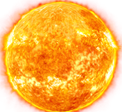
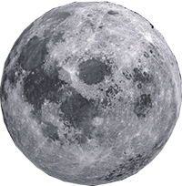
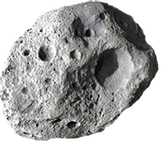

Основные принципы, определения и источники
1. Определение
Международное космическое право (Далее - МКП) представляет собой совокупность правовых норм, регулирующих международные отношения по исследованию и использованию космического пространства.
Что относится к небесным телам?
Звезды
Спутники планет
Кометы, метеориты,
астероиды

Планеты
История появления и развития
- Событие
- Подробнее
Запуск первого в мире искусственного спутника земли,
1957 год.
Это событие послужило началу развития МКП и также началу изучения необъятного космоса.
- Событие
- Подробнее
Появление специального комитета ООН по использованию космического пространства в мирных целях (КОПУОС)
1959 год.
С появлением этого комитета ООН появились первые договора, связанные с космосом.
Принятие 8 договоров, касающихся использованию космоса
1966-2007 года.